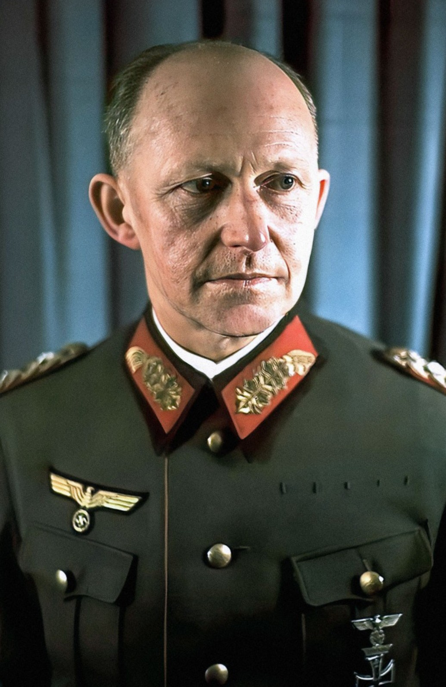

Nom : Alfred Josef Ferdinand Jodl
Dates : 10 mai 1890 – 16 octobre 1946
Nationalité : Allemande
Alfred Jodl est l’un des principaux responsables militaires du régime nazi. En tant que chef des opérations de l’OKW, il supervise la planification militaire et transmet les ordres stratégiques d’Hitler, y compris ceux impliquant des crimes de guerre.
Jodl joue un rôle central dans la direction militaire du Reich. Il valide et diffuse les directives d’Hitler concernant les opérations sur tous les fronts, notamment les ordres de représailles massives, d’exécutions sommaires et de politiques de terreur.
Le 7 mai 1945, il signe la capitulation allemande à Reims au nom de la Wehrmacht, mettant officiellement fin aux combats en Europe.
Jodl est considéré comme l’un des principaux exécutants militaires du régime nazi. Sa loyauté totale envers Hitler et son rôle dans la transmission d’ordres criminels ont conduit à sa condamnation pour crimes de guerre et crimes contre l’humanité.